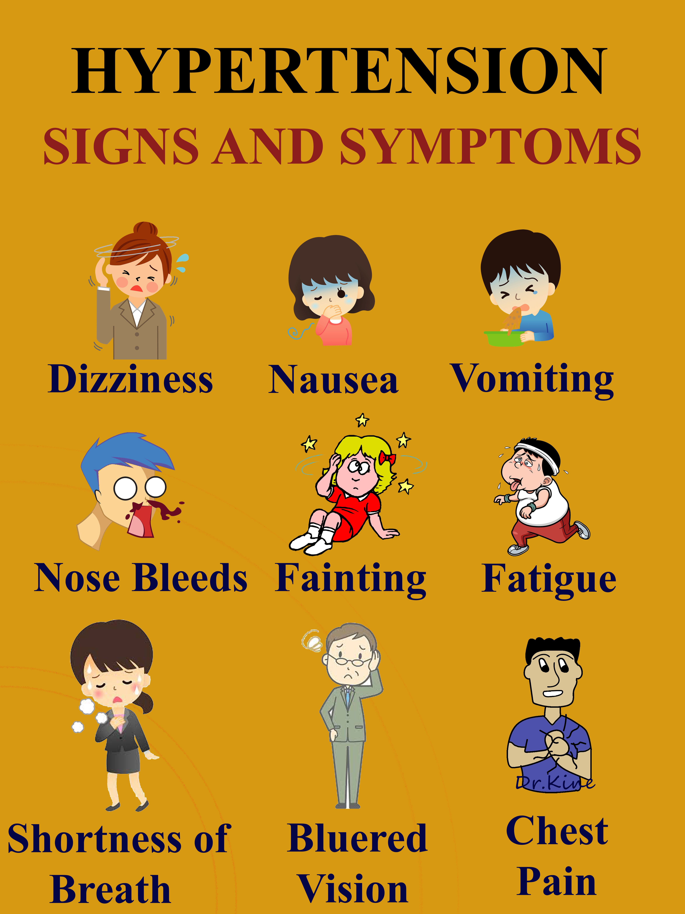

Symptoms of High Blood Pressure

One of the most dangerous things about hypertension – or high blood pressure – is that you may not know you have it. In fact, nearly one-third of people who have high blood pressure don't know it.
That’s because high blood pressure doesn’t have any symptoms unless it’s very severe. The best way to know if your blood pressure is high is through regular checkups. You can also monitor blood pressure at home. This is especially important if you have a close relative who has high blood pressure.
Symptoms of Severe High Blood Pressure
If your blood pressure is extremely high, there may be certain symptoms to look out for, including:
Severe headaches
Nosebleed
Fatigue or confusion
Vision problems
Chest pain
A hard time breathing
Irregular heartbeat
Blood in the urine
Pounding in your chest, neck, or ears
Seizures
People sometimes feel that other symptoms may be related to high blood pressure, but they may not be:
Dizziness
Nervousness
Sweating
Trouble sleeping
Facial flushing
Blood spots in eyes
When to See a Doctor
If you have any of these symptoms, see a doctor right away. You could be having a hypertensive crisis that could lead to a heart attack or stroke. You may also have another serious health condition.
Most of the time, high blood pressure doesn’t cause headaches or nosebleeds. But this can happen in a hypertensive crisis when blood pressure is above 180/120. If your blood pressure is extremely high and you have these symptoms, rest for 5 minutes and check again. If your blood pressure is still unusually high, it’s a medical emergency. Call 911.
It’s important to remember that high blood pressure doesn’t usually have symptoms. So, everyone should get it checked regularly. The American Heart Association recommends that adults with normal blood pressure should get blood pressure checked each year at routine health visits. You may also have it checked at a health resource fair or other events or places in your community.
If you have high blood pressure, your doctor might recommend that you monitor it more often at home. At-home monitors may work better than store-based machines. Your doctor will also recommend making lifestyle changes along with medications to lower your blood pressure.
Untreated hypertension can lead to serious diseases, including stroke, heart disease, kidney failure, and eye problems.